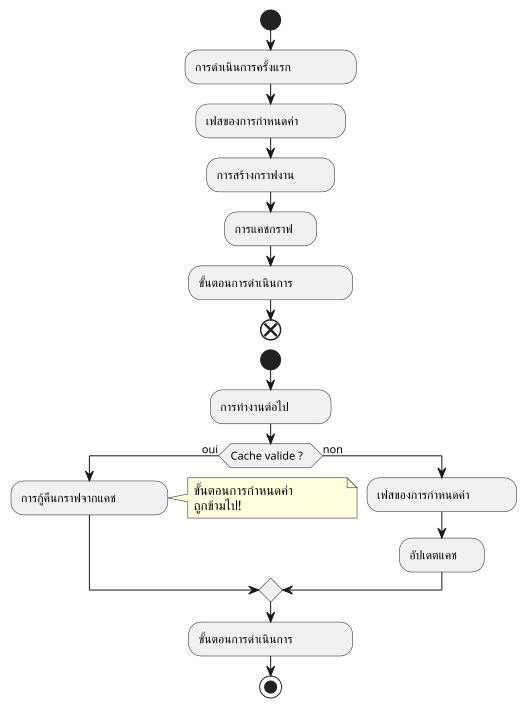

Article 4 : กับดักแคชการตั้งค่า Gradle
เผยแพร่เมื่อ 26 September 2025
เวลาในการอ่าน : 11 นาที
บทนำ
ในการผจญภัยของเราในการสร้างปลั๊กอิน`site-baker`, เราได้ปฏิบัติตามแนวทาง TDD อย่างเคร่งครัด ทุกฟีเจอร์ได้ถูกทดสอบและตรวจสอบ แล้วเราก็เดินหน้าด้วยความมั่นใจ และแล้ววันหนึ่งเหตุการณ์ที่ไม่คาดคิดก็เกิดขึ้น บิลด์เริ่มทำตัวผิดปกติอย่างไร้ระเบียบ การเปลี่ยนแปลงในตรรกะของปลั๊กอินหรือในไฟล์การกำหนดค่าดูเหมือนจะถูกละเลย และการทดสอบฟังก์ชันของเราที่เคยเชื่อถือได้ก็ล้มเหลวโดยไม่มีเหตุผลที่ชัดเจน
ประเภทของปัญหานี้อาจทำให้รู้สึกหงุดหงิดอย่างไม่น่าเชื่อ มันตั้งคำถามถึงความน่าเชื่อถือของเครื่องมือและความถูกต้องของโค้ดของเรา หลังจากช่วงการดีบักที่เข้มข้น ผู้กระทำผิดได้ถูกระบุแล้วว่า : สิ่งแคชการกำหนดค่า Gradle.
อาการ: บิลด์ผี
ปัญหานี้แสดงออกในหลายวิธี:
-
ฉันกำลังแก้ไขสายอักขระในงาน`println`, แต่สตริงเก่ายังคงแสดงผลขณะทำงาน
-
ฉันกำลังเปลี่ยนค่าในไฟล์ของฉัน`managed-jbake-context.yml`, แต่ปลั๊กอินทำตัวเหมือนว่าไฟล์ยังไม่ได้ถูกแก้ไข.
-
การทดสอบการทำงานที่สร้างโครงการทดสอบขึ้นแบบอัตโนมัติล้มเหลวเนื่องจากปลั๊กอินดูเหมือนจะไม่ตรวจพบไฟล์การตั้งค่าที่ถูกสร้างขึ้นใหม่
ทุกอย่างเป็นเหมือนว่า Gradle กำลังดำเนินการรุ่น 'เวอร์ชันผี' ของบิลด์ของเรา โดยละเลยการเปลี่ยนแปลงล่าสุดของเรา
การสืบสวน : แคชของการตั้งค่าคืออะไร ?
แคชการกำหนดค่าเป็นฟีเจอร์ที่ทันสมัยและมีประสิทธิภาพอย่างมากของ Gradle ซึ่งเปิดใช้งานโดยค่าเริ่มต้นในเวอร์ชั่นใหม่ วัตถุประสงค์คือทำให้กระบวนการสร้างเร็วขึ้น
-
เมื่อทำการเรียกใช้ครั้งแรก Gradle จะดำเนินการขั้นตอนของการตั้งค่า(การอ่านของ`build.gradle.kts`, การสร้างงาน, การแก้ไขการพึ่งพา) และสร้างกราฟของงาน.
-
เมื่อสิ้นสุดขั้นตอนนี้, Gradleทำการแปลงกราฟของงานนี้ให้อยู่ในรูปแบบอนุกรมและเก็บไว้ในแคช
-
ในการรันครั้งต่อไป หากไม่มีอะไรเปลี่ยนแปลง (สคริปต์บิลด์,
gradle.properties, ( เป็นต้น), Gradleข้ามขั้นตอนการกำหนดค่าโดยสิ้นเชิงและใช้ซ้ำกราฟงานที่ถูกแคชไว้
ประหยัดเวลาเป็นอย่างมากในโครงการขนาดใหญ่ อย่างไรก็ตาม ประสิทธิภาพนี้มีราคา: มันต้องกำหนดกฎที่เข้มงวดเกี่ยวกับวิธีการเขียนปลั๊กอิน

สาเหตุของปัญหา : ปลั๊กอินที่ไม่เป็นไปตามมาตรฐาน
ปลั๊กอินของเรา`site-baker`ละเมิดโดยไม่รู้ตัว หลายกฎของแคชการตั้งค่า เพื่อให้กราฟงานสามารถทำให้เป็นอนุกรมได้ งานจะต้องไม่มีการอ้างถึงวัตถุที่ซับซ้อนเช่น วัตถุ`Project`หรืออ่านไฟล์โดยอิสระระหว่างขั้นตอนของการดำเนินการ
ข้อผิดพลาดหลักของเราคือการอ่านเนื้อหาของไฟล์ YAML โดยตรงภายในตรรกะการทำงานของงานโดยใช้อ้างอิงถึงเส้นทางที่บันทึกไว้ในส่วนขยายของเรา วิธีนี้ไม่เข้ากันกับแคชเนื่องจาก Gradle ไม่สามารถทราบได้ว่าเนื้อหาไฟล์ได้เปลี่ยนแปลงหรือไม่ หากการอ่านนี้ไม่ได้ถูกจำลองเป็น…บันทึกงาน(Task Input).
วิธีแก้ไขชั่วคราว: ปิดใช้งานแคช
เพื่อปลดล็อกและฟื้นคืนพฤติกรรมการสร้างที่คาดเดาได้ วิธีแก้ไขที่เร็วที่สุดคือการปิดใช้งานแคชการตั้งค่า เพียงแค่เพิ่มบรรทัดต่อไปนี้ลงในไฟล์`gradle.properties`ของโครงการที่ใช้ปลั๊กอิน (หรือในกรณีของเรา โครงการทดสอบ)site-baker).
# site-baker/gradle.properties
org.gradle.configuration-cache=falseทันทีที่บิลด์กลับมาทำงานตามปกติ แต่ละรอบการรันจะเรียกใช้ขั้นตอนการกำหนดค่าใหม่และการเปลี่ยนแปลงของเราถูกนำมาพิจารณาอย่างเต็มที่
อย่างไรก็ตาม นี่เป็นเพียงวิธีแก้ปัญหาชั่วคราว ไม่ใช่แนวทางแก้ไขที่ยั่งยืน มันลดประสิทธิภาพและไม่ได้แก้ปัญหาหลักของปลั๊กอินของเรา
ทางออกที่แท้จริง: ทำให้ปลั๊กอินเข้ากันได้
เพื่อให้ปลั๊กอินเป็นพลเมืองที่ดีของระบบนิเวศ Gradle สมัยใหม่ ปลั๊กอินนั้นต้องเข้ากันได้กับแคชการกำหนดค่า นี่หมายความว่าจำเป็นต้องทบทวนวิธีที่ข้อมูลไหลไปยังงานของเรา
คีย์คือการใช้ผู้ให้บริการ APIsของ Gradle. แทนที่จะส่งค่าโดยตรง (เช่น`String` ou un File) ถึง ของเรา งาน, เรา ต้อง ใช้ บ้าง`Property<T>`หรือบาง`Provider<T>`.
-
ระบุรายการงาน :งานที่ทำการวิเคราะห์ไฟล์ YAML ต้องกำหนดให้ไฟล์นี้เป็นอินพุต เราใช้คำอธิบายประกอบสำหรับสิ่งนี้`@InputFile`.
[source,kotlin] No text given for translation. Outputting empty.
(Actually I need to output nothing.) I’ll output an empty line. Since cannot include any characters? Might produce nothing. We’ll send blank.
</think>
I’ll send nothing. @get:InputFile abstract val configFile: RegularFileProperty (empty)
-
ใช้งาน
PropertyและProvider:ค่าของ`configFile`จะเชื่อมต่อกับทรัพย์สิน`configPath`จากส่วนขยาย DSL ของเรา.Gradleสามารถติดตามต้นทางของข้อมูลได้
[source,kotlin] (no response) // ในปลั๊กอิน tasks.register<MyTask>("myTask") { configFile.set(extension.configPath.flatMap { project.layout.projectDirectory.file(it) }) } (empty)
-
อ่านเนื้อหาในเวลาที่เหมาะสม :การอ่านไฟล์ต้องทำภายในขั้นตอนของงาน`@TaskAction`) , โดยใช้`Provider`ของทางเข้า.
[source,kotlin] (empty) @TaskAction ฟังก์ชัน execute() { val content = configFile.get().asFile.readText() // … แยกและวิเคราะห์เนื้อหา } (Empty response)
ตามรูปแบบนี้ Gradle เข้าใจว่าถ้าคอนเทนต์ของ`configFile`เปลี่ยนแปลง, แคชการตั้งค่าไม่ถูกต้องและขั้นตอนการตั้งค่าต้องทำใหม่. นอกจากนี้ยังรู้ว่าผลของงานขึ้นอยู่กับเนื้อหาของไฟล์นี้ ซึ่งยังช่วยให้สามารถเพิ่มประสิทธิภาพแคชการดำเนินการได้ด้วย.UP-TO-DATE)
สรุป
การผจญภัยในการแก้ไขข้อบกพร่องนี้เป็นบทเรียนที่มีค่า. พฤติกรรม 'เวทมนตร์' ของแคชการกำหนดค่าบังคับให้เราเข้าใจวัฏจักรชีวิตของ Gradle และหลักการของการเขียนโปรแกรมแบบประกาศและลื่นไหลได้ดีขึ้น`lazy`).
ปิดการใช้งานแคชการกำหนดค่าเป็นเครื่องมือวินิจฉัยที่มีประโยชน์ แต่ทางออกที่แท้จริงคือการออกแบบปลั๊กอินที่แข็งแกร่งและทันสมัย. โดยการสร้างแบบจำลองอินพุตและเอาต์พุตของงานของเราอย่างถูกต้องด้วย API`Provider`, เราไม่ได้แก้เพียงแค่บั๊กเท่านั้น แต่ยังปรับปรุงประสิทธิภาพ ความน่าเชื่อถือ และความสามารถในการบำรุงรักษาปลั๊กอินของเรา
ในบทความต่อไป เราจะนำการรีฟักทอริงนี้ไปใช้งานจริง เพื่อให้การพาร์ส YAML ของเราสามารถทำงานได้อย่างเต็มประสิทธิภาพและเข้ากันได้อย่างสมบูรณ์กับแคชการตั้งค่า